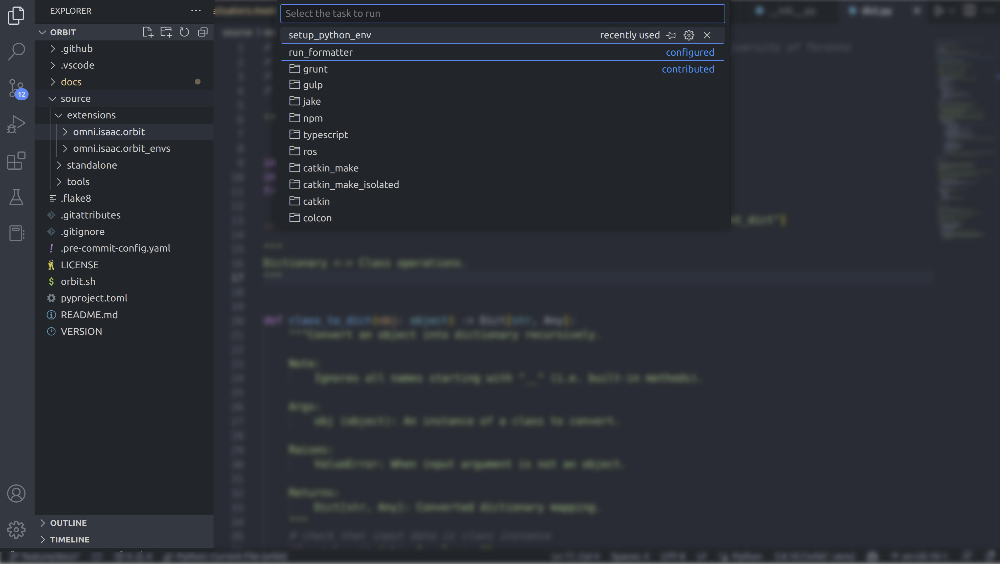

开发人员指南#
对于开发，我们建议使用 Microsoft Visual Studio Code (VSCode) 。 NVIDIA Omniverse也建议使用此方法，并且存在有关如何使用VSCode进行 ` 调试Omniverse扩展 <https://www.youtube.com/watch?v=Vr1bLtF1f4U&ab_channel=NVIDIAOmniverse>`__ 的教程。
设置Visual Studio Code#
以下仅适用于通过Omniverse Launcher安装的Isaac Sim。 Isaac Lab 存储库包括VSCode设置，可以轻松设置开发环境。 这些设置包含在 .vscode 目录中，并包括以下文件：
.vscode
├── tools
│ ├── launch.template.json
│ ├── settings.template.json
│ └── setup_vscode.py
├── extensions.json
├── launch.json # <- this is generated by setup_vscode.py
├── settings.json # <- this is generated by setup_vscode.py
└── tasks.json
设置IDE，请按照以下说明进行操作：
在Visual Studio Code IDE中打开
Isaac Lab目录通过按下
Ctrl+Shift+P，选择Tasks: Run Task并运行下拉菜单中的setup_python_env来运行VSCode Tasks 。
{kind=link}
如果一切正常执行，它应该创建以下文件：
.vscode/launch.json: 包含用于调试 Python 代码的启动配置。.vscode/settings.json: 包含 Python 解释器和 Python 环境的设置。
有关Omniverse的VSCode支持的更多信息，请参阅以下链接：
配置Python解释器#
在提供的配置中，我们将默认Python解释器设置为使用Omniverse提供的Python可执行文件。 这在 .vscode/settings.json 文件中指定：
{
"python.defaultInterpreterPath": "${workspaceFolder}/_isaac_sim/python.sh",
}
如果您想要使用不同的Python解释器（例如，来自您的conda环境），则需要通过选择和激活您选择的Python解释器来更改所使用的Python解释器VSCode的左下角，或者打开命令面板（ Ctrl+Shift+P ）并选择 Python: Select Interpreter 。
有关如何为VSCode设置Python解释器的更多信息，请参阅 VSCode文档 。
存储库组织#
The Isaac Lab repository is structured as follows:
IsaacLab
├── .vscode
├── .flake8
├── LICENSE
├── isaaclab.sh
├── pyproject.toml
├── README.md
├── docs
├── source
│ ├── extensions
│ │ ├── omni.isaac.lab
│ │ ├── omni.isaac.lab_assets
│ │ └── omni.isaac.lab_tasks
│ ├── standalone
│ │ ├── demos
│ │ ├── environments
│ │ ├── tools
│ │ ├── tutorials
│ │ └── workflows
└── VERSION
source 目录包含所有 Isaac Lab 扩展 和 独立应用程序 的源代码。 这两种开发工作流受到了 Isaac Sim 的支持。 这些在以下章节中有所描述。
扩展#
推荐的方法是在Isaac Sim中开发应用程序的扩展。它们是模块化的软件包，构成了Omniverse生态系统。 每个扩展都提供一组功能，可供其他扩展或独立应用程序使用。 如果包含 config 目录中的 extension.toml 文件，则将一个文件夹识别为扩展。 有关扩展的更多信息，请参阅 Omniverse文档 。
Isaac Lab本身提供了用于机器人学习的扩展。 这些扩展写入 source/extensions 目录。 每个扩展都以Python包的形式编写，并遵循以下结构：
<extension-name>
├── config
│ └── extension.toml
├── docs
│ ├── CHANGELOG.md
│ └── README.md
├── <extension-name>
│ ├── __init__.py
│ ├── ....
│ └── scripts
├── setup.py
└── tests
config/extension.toml 文件包含扩展的元数据。 这包括名称，版本，描述，依赖关系等。 Omniverse使用这些信息来加载扩展。 docs 目录包含有关扩展的具有更多详细信息的文档以及包含扩展每个版本更改的CHANGELOG文件。
<extension-name> 文件夹包含扩展的主Python包。 它还可能包含 scripts 目录，用于保存在启用扩展时加载到Omniverse中的基于Python的应用程序的文件。使用 ` 扩展管理器 <https://docs.omniverse.nvidia.com/kit/docs/kit-manual/latest/guide/extensions_basic.html>`__ 。
更具体地说，启用扩展时， config/extension.toml 文件中指定的Python模块被加载，并且包含：omni.ext.IExt类的子级的脚本会被执行。
import omni.ext
class MyExt(omni.ext.IExt):
"""My extension application."""
def on_startup(self, ext_id):
"""Called when the extension is loaded."""
pass
def on_shutdown(self):
"""Called when the extension is unloaded.
It releases all references to the extension and cleans up any resources.
"""
pass
将扩展加载到Omniverse中是自动进行的，但是在独立应用程序中使用Python包需要额外的步骤。 为了简化构建过程并避免需要了解Omniverse使用的 premake 构建系统，我们直接使用 setuptools Python软件包来构建扩展的Python模块。 这是通过扩展目录中的 setup.py 文件完成的。
备注
setup.py 文件不适用于只使用 ` 扩展管理器 <https://docs.omniverse.nvidia.com/prod_extensions/prod_extensions/ext_extension-manager.html>`__ 加载到Omniverse中的扩展。
最后， tests 目录包含扩展的单元测试。 这是使用 unittest 框架编写的。 需要注意的是Omniverse还提供了类似的 ` 测试框架 <https://docs.omniverse.nvidia.com/kit/docs/kit-manual/104.0/guide/testing_exts_python.html>`__ 。 但是，它需要经过构建过程，并且不支持独立应用程序中Python模块的测试。
扩展依赖管理#
某些扩展可能具有依赖关系，需要在扩展可以运行之前进行安装。 尽管可以通过 setup.py 中的 INSTALL_REQUIRES 数组来指定Python依赖项，但是我们需要一个单独的安装流程来处理非Python依赖项。 因此，我们创建了一个额外的设置过程， python tools/install_deps.py {dep_type} {extensions_dir} ，它会扫描 {extensions_dir} （例如 ${ISAACLAB_PATH}/source/extensions ）下的目录的 extension.toml 文件，以扫描出 apt 和 rosdep 依赖项。
在上例的 extension.toml 中，指定了 apt_deps 和 ros_ws ，因此如果传递 python tools/install_deps.py all ${ISAACLAB_PATH}/source/extensions ，则会安装 apt 和 rosdep 包：
[isaaclab_settings]
apt_deps = ["example_package"]
ros_ws = "path/from/extension_root/to/ros_ws"
从上例的 apt_deps 中，将通过 apt 安装包 example_package 。 从 ros_ws 中，将调用 rosdep install --from-paths {ros_ws}/src --ignore-src 命令。 这将安装以下目录结构中的所有 ROS package.xml依赖项 。当前假定ROS版本为 humble 。
apt 依赖在 Dockerfile.base 的构建过程中将自动以这种方式进行安装， rosdep 依赖在 Dockerfile.ros2 的构建过程中进行安装。
独立应用程序#
在典型的Omniverse工作流程中，首先启动模拟器，然后启用扩展以加载Python模块并运行Python应用程序。 尽管这是一种推荐的工作流程，但并非总是可以使用此工作流程。 例如，对于机器人学习，需要对模拟器进行完全控制，而不是异步等待模拟器进行操作的所有其他功能。 在这种情况下，有必要编写一个独立应用程序，该应用程序使用 AppLauncher 启动模拟器，并通过 SimulationContext 类对模拟进行完全控制。
"""Launch Isaac Sim Simulator first."""
from omni.isaac.lab.app import AppLauncher
# launch omniverse app
app_launcher = AppLauncher(headless=False)
simulation_app = app_launcher.app
"""Rest everything follows."""
from omni.isaac.lab.sim import SimulationContext
if __name__ == "__main__":
# get simulation context
simulation_context = SimulationContext()
# reset and play simulation
simulation_context.reset()
# step simulation
simulation_context.step()
# stop simulation
simulation_context.stop()
# close the simulation
simulation_app.close()
source/standalone 目录包含使用 Isaac Lab 提供的扩展设计的各种独立应用程序。 这些应用程序以Python编写，并且拥有以下结构：
演示：包含展示核心框架
omni.isaac.lab的各种演示应用程序。环境：包含用于运行
omni.isaac.lab_tasks中定义的具有不同代理的环境的应用程序。 这些包括随机策略，零动作策略，遥操作或脚本状态机。工具：包含用于使用框架提供的工具的应用程序。 这些包括转换资产，生成数据集等。
教程：包含使用框架提供的API的分步教程。
工作流程：包含使用各种基于学习的框架的环境的应用程序。 这些包括不同的强化学习或模拟学习库。